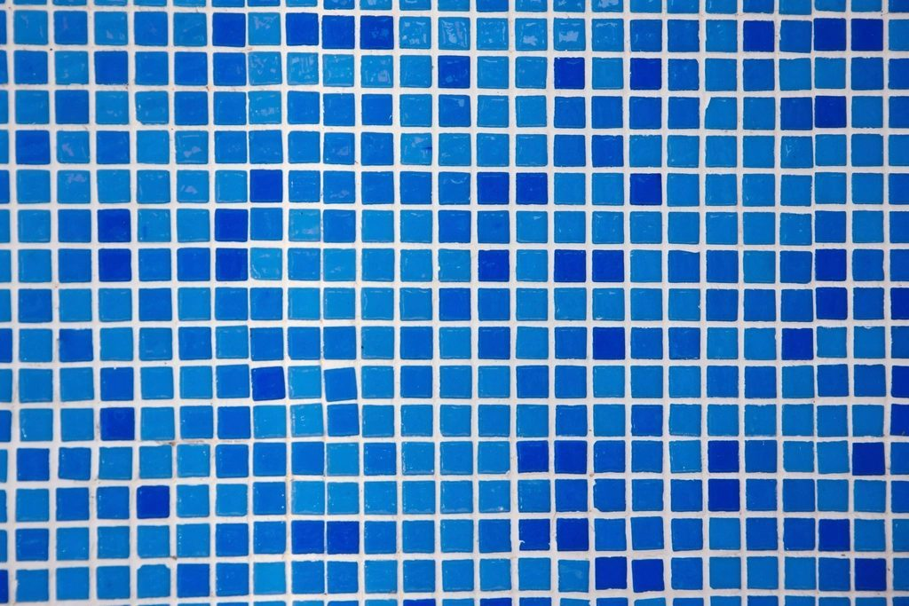
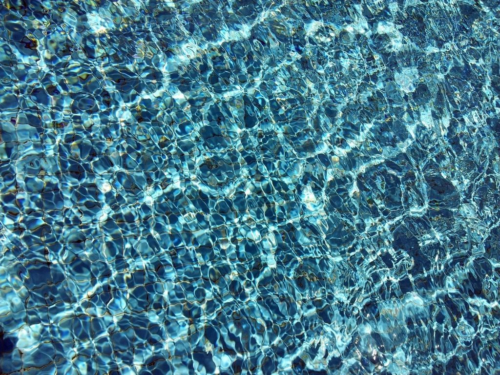
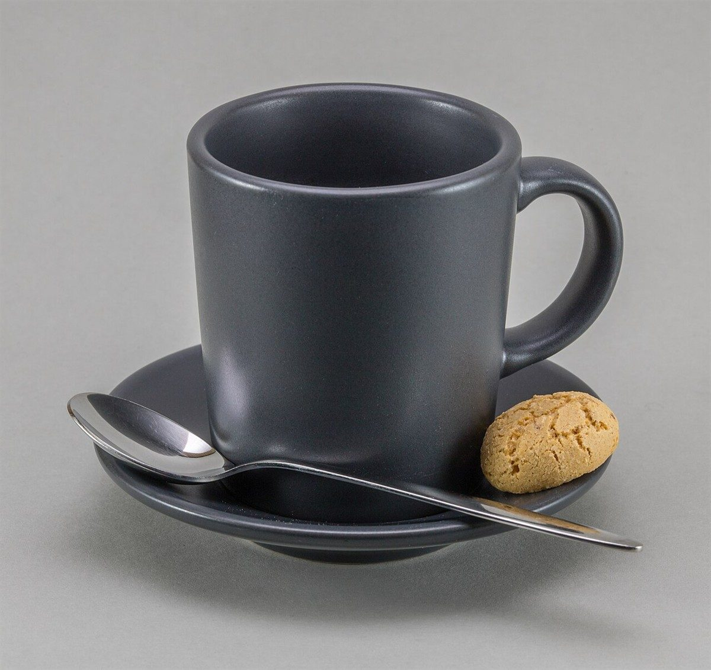

カフェ / 岩手県花巻市
MISSINGPIECE
岩手県花巻市のカフェ「MISSING PIECE」のご案内ページです。営業時間やメニューは準備中。まずはInstagramをのぞいてみてください。
 02
02
03 05
05張り替え待ちこの1枚は準備中

07 08
08
09制作側の連想
タイルの壁に、1枚だけ空いた場所。
「MISSING PIECE」という屋号から、制作側は「タイルの壁で、1枚だけ張り替え待ちになっている場所」を連想しました。このページはタイルを並べた壁になっていて、1枚だけ朱色の枠が空いています。制作側の連想で、お店の理念・由来とは無関係ものです。屋号の意味は分かりません。